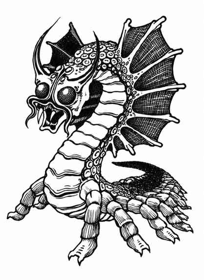

雷莫拉兹 · Remorhaz

|
雷莫拉兹又称极地蠕虫，只栖息于寒冷荒原，是极具攻击性的捕食者。在巢穴中遭遇时，有 25% 的概率同时有配偶和 1–2 枚卵。其体长由生命骰决定：7 骰长 21 尺，8 骰长 24 尺，依此类推。雷莫拉兹卵每枚价值 5,000 金币。
战斗时，雷莫拉兹扇动小翼，抬起身体前四分之一，随后以惊人速度向前弹击；最大的个体能以此方式将猎物整只吞下。被吞下的目标会因怪物消化系统中的高热立即死亡；掷出自然 20 时即可整吞猎物。雷莫拉兹被激怒后，会在体内分泌物质，使肠道变得极热，背部突起因余热而发出樱桃红光。任何击中其背部的非魔法武器都会因高温熔化；接触这些表面的生物受到 10–100 点伤害。
雷莫拉兹全身呈冰蓝色，只有背部沿突起处有一道白色条纹；其复眼为白色。